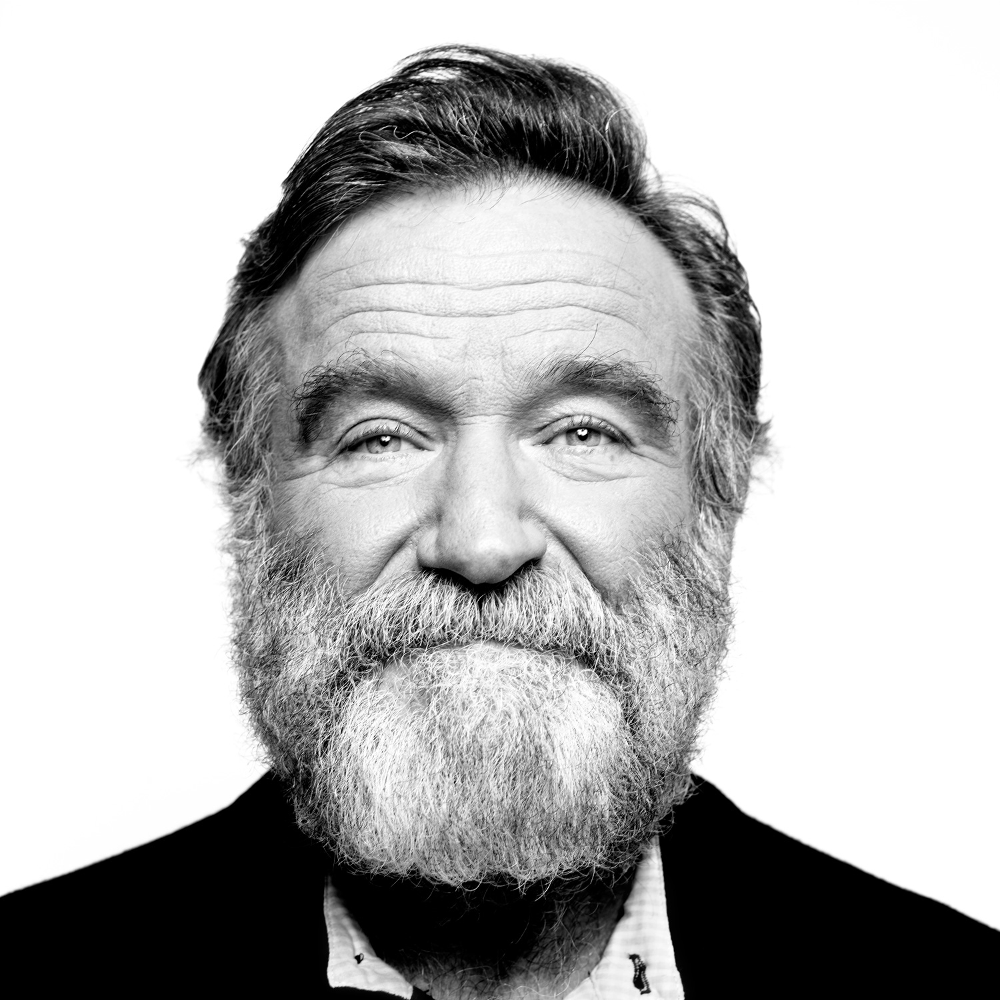

Robin Williams
1951 - 2014
“No matter what people tell you, words and ideas can change the world.”

1951 - Born in Chicago
1975 - Robin Williams begins doing stand-up comedy, giving his first performance at the Holy City Zoo comedy club in San Francisco
1878 - Williams marries Valerie Velardi and lands his first major TV role: Mork & Mindy
1980 - First movie role: Popeye
1989 - Williams plays a teacher in the film Dead Poets Society and marries Marsha Garces
1991 - The Fisher King
1992 - Robin Williams takes on the role of the Genie in Disney's Alladin
1998 - What Dreams May Come
1999 - Bicentenial Man
2002 - Insomnia
2006 - Night at the Museum
2014 - Dies at the age of 63
If you have time, you should read more about Robin Williams on his
Wikipedia entry
.